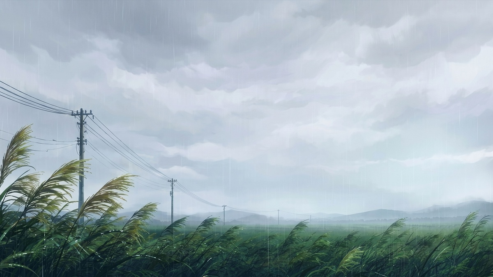

Gallery

Information
当Webサイトは一個人が運営する非公式 ファンサイトです。
※こちらのデモページに掲載している画像はフリー素材をお借りしたものです。テンプレートを使用する際はご自身で用意した画像に差し替えてください。
Fan Inspired Visual

当Webサイトは一個人が運営する非公式 ファンサイトです。
※こちらのデモページに掲載している画像はフリー素材をお借りしたものです。テンプレートを使用する際はご自身で用意した画像に差し替えてください。